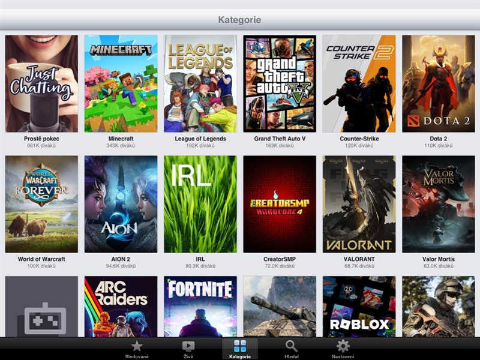
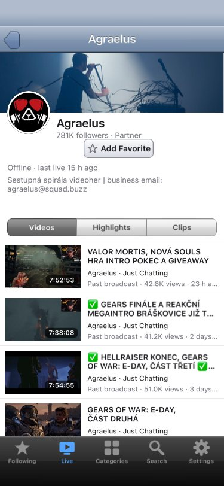
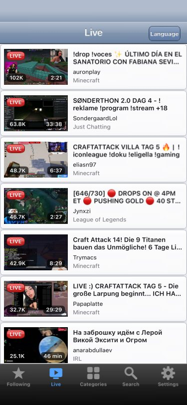

Twitcher
Twitch: živé přenosy s chatem, záznamy, klipy
Twitch: živé přenosy s chatem, záznamy, klipy
Univerzální klient Twitche pro iPhone i iPad v lesklém vzhledu iOS 6. Na sledování není potřeba účet; po přihlášení krátkým kódem uvidíš sledované kanály a můžeš psát do chatu. Servery Twitche mluví jen dnešním TLS, proto má aplikace vlastní TLS vrstvu a video posílá systémovému přehrávači přes malou místní proxy. Ze zařízení neodchází nic než požadavky na Twitch a služby s emotikony.





Neoficiální aplikace od samcejko, bez vazby na Twitch, Google, Apple, TikTok, Instagram, Metu, Spotify, Kick, NVIDIA, Mojang, Microsoft, OpenRouter, Vine, X, diVine ani projekty Moonlight, Sunshine a Apollo.